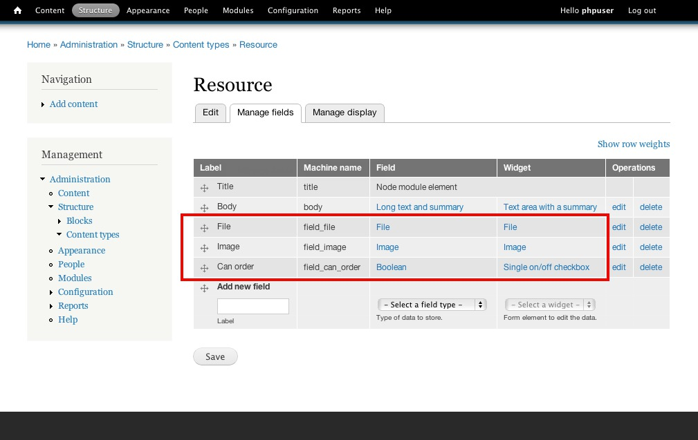
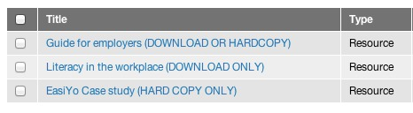
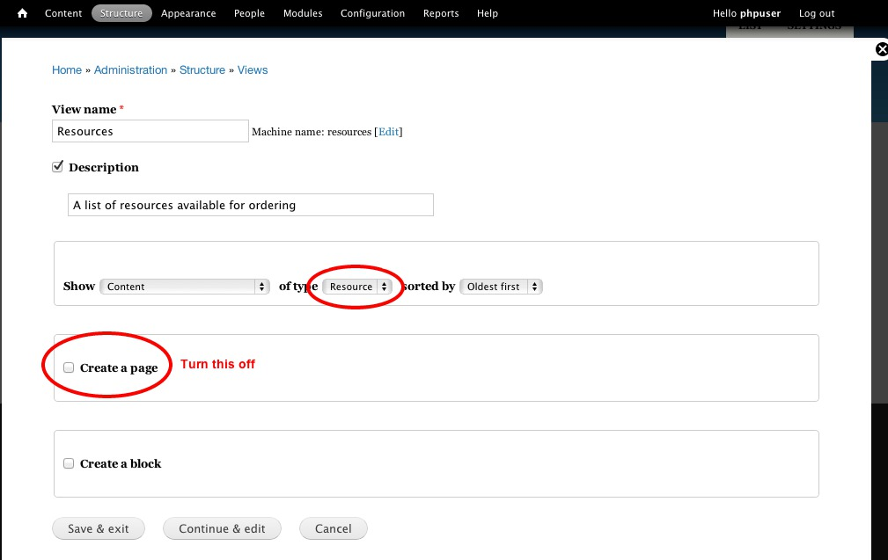
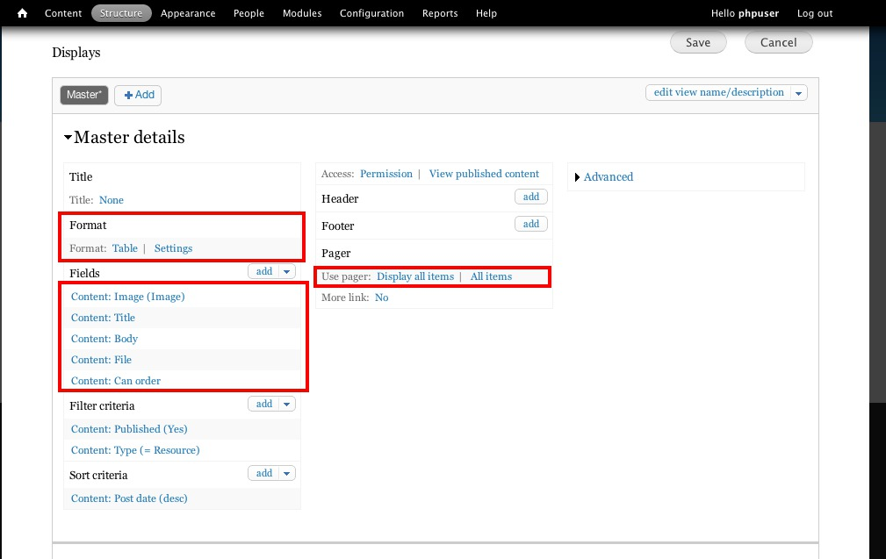
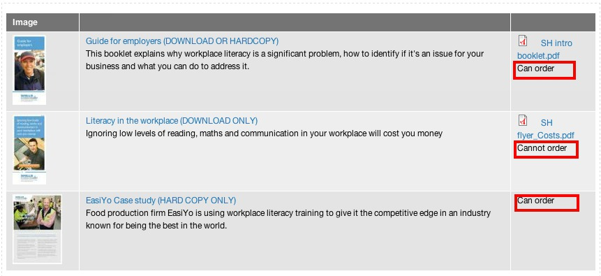
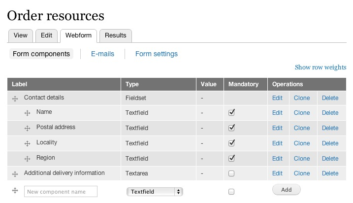
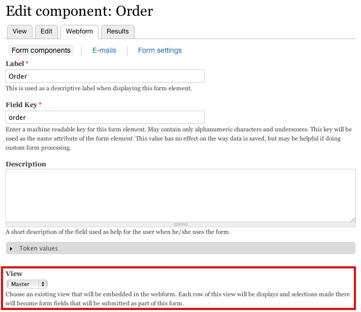
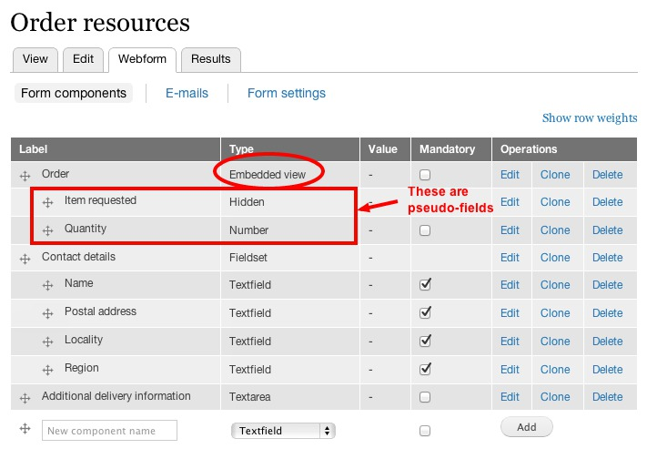

Webform View is a module that allows you to embed a view as part of a webform. Form elements (checkboxes, quantity selectors) are inserted into each result row. Data in this view can then become part of the data submitted in the webform submission.
The primary use-case this was built for is to enable a webform to be used as an order form where a user can select items displayed in the view, and request those resources or register interest in them in a way that the reciever of the submission can work with.
Was hard. Webform doesn't natively support multiple/unlimited selections very well, and doesn't like the available options being dynamic very well. Although with recent developments in the webform+select+views options, a simple list of options can now be supported, anything more (item+quantity data) is still out of reach.
Instead, an extension to webform (described above) was developed. To work, it has to do some brain-surgery on both the display and the results processing. This is described here. Although there are now several moving parts that have to be configured, this was engineered to produce the desired result in a highly re-usable and configurable way.
At this point, using the webform should merge all functions together. Viewing the webform should display the view, and include form fields in the layout location of the "webform placeholder". Submissions to this webform should save the values for each item in the view. Generated emails should list each selection.
Though not required, for this demo I'll also use

For variety, I'll show one that is available in hardcopy-only, one that is download-only, and one that is both. This is enabled by our "can order" checkbox field.
Just a view that filters on type:resource will do here. I'll use a table+fields view display for now, though I'd recommend using teasers (or view mode) display most of the time.
You don't need a 'page' display, and some views options like paging will not work in this context, so leave them out.


With a small amount of adjustment, we get a view that produces this:

Note our "Can order" field will be where the webform will do its thing soon.
This is the view we will embed in our webform.
Add whatever normal fields you need in the webform for submission as usual.

Here use the new webfrom view webform component "Embedded view". I'll call it "Order"
In the options for this field you should choose the "View" we just created. The "Master" display should be adequate.
These fields will need to record at least
A: the item name,
B: the request submitted with this form.
So add two fields. Importantly - they must be positioned as children of the view.
The item name will already be apparent to users, and should not be displayed as a field, so make it hidden. (We will have to fill in data there ourselves, see below)
I'll add a number "Quantity" field here too, though a checkbox would also work for some cases.

Sorry, This is one extra fiddly step, used to ensure that the text in the submission results names the selected item appropriately.
This was required as various view_modes and views rows may have different data available. For example you may want to add a "[field_sku]" or "[field_nid]" there as well to better identify the resource in question. Importantly, [node_title] is only available in field-based-views, not teasers or view-modes! Arg? This is because, internally, the view doesn't make that data available at this point in rendering.
There is a work-around. This is not needed in field-based views, where the value of each rows field should be available as a token like this.
If using teaser-based views, Add an extra "Sort criteria" to your view definition. Sort on "Content: Title". This is enough to make the above token have some data to work with, even if the sort cirteria is weighted lower than the "Post date" - effectively making it an ineffective sort.
These fields, which we have defined using the webform UI, need to be displayed as part of a view, which is in turn being pulled in and displayed as part of a webform.
So, when submitting the webform, the data for each item in the view will be submitted and saved as part of the webform submission.
So far, we have used normal Views UI and normal Webform UI to set up all the pieces.
What remains is to glue them together.